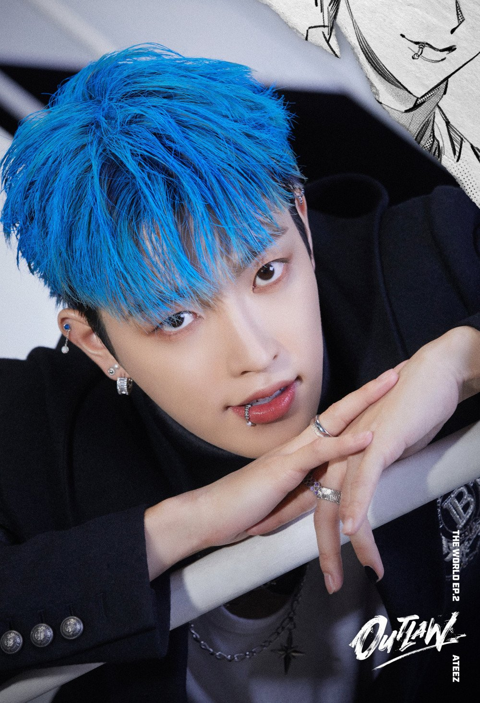
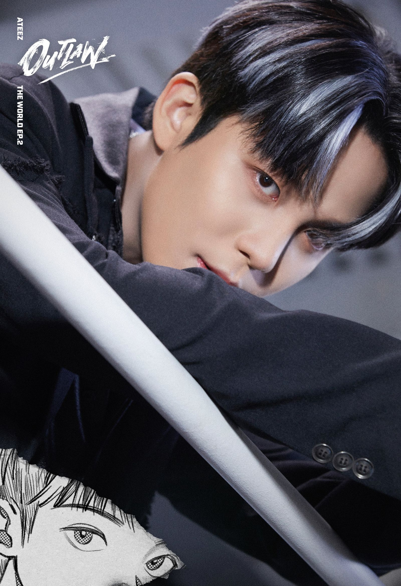
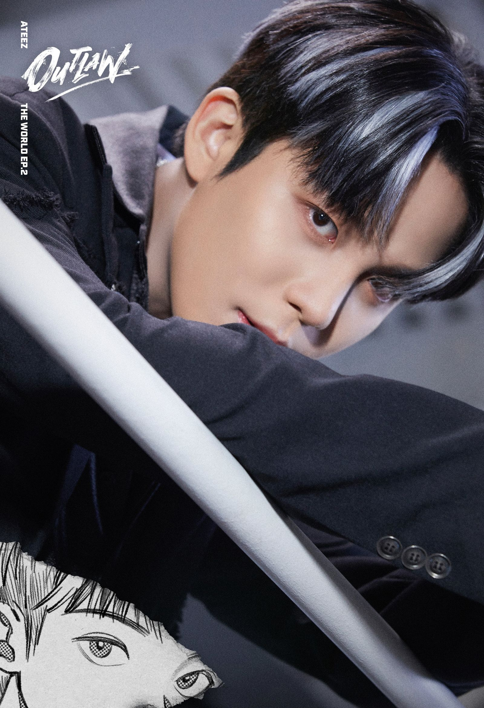

Hongjoong

- Stage Name: Hongjoong (홍중)
- Birth Name: Kim Hong Joong (김홍중)
- Position: Captain, Main Rapper, Vocalist, Composer, Center
- Birthday: November 7th, 1998
- Zodiac Sign: Scorpio
- Height: 172 cm (5’8″)
- Weight: –
- Blood Type: B
- MBTI Type: INFP-A
- Hongjoong Facts:
- – He was born in Anyang, Gyeonggi-do, South Korea.
- – He has an older brother named Bumjoong who is a contemporary dancer and an actor.
- – Hongjoong was the first to join KQ Entertainment.
- – The CEO gave him the name of ‘Captain’ because of their worldview/concept.
- – If the ATEEZ’s members call Hongjoong « Leader » instead of « Captain », they have to give him 50,000
wons.
- – Nicknames: Hong-leader, Mini-Hong, Korea Big Minion, Pokjoong.
- – Hongjoong is considered the dad of the group.
- – His hobbies are listening to music and composing.
- – His specialty is reforming clothes.
- – Hongjoong has two tattoos: one on his ankle featuring the word ‘faith’ with wings and another on his
inner right arm saying ‘NO 1 LIKE ME’.
- – He has been actively supporting campaigns such as Polished Man, Dear Heart and Happy Hippie Ring.
- – His favorite colors are Red and Yellow.
- – Seonghwa and Hongjoong hate mint-chocolate.
- – His role models are G-Dragon and Zico.
- – He said he likes may UK artists like David Bowie, One Direction and Harry Styles.
- – As of March 2023, Hongjoong has 92 KOMCA credits.
- – He is fluent in English and can also speak basic Japanese and Spanish.
- – Hongjoong’s microphone color is white because he thinks it goes well with all the colors. (ATEEZ
Twitter Blueroom Live 200430)
- – Hongjoong was a contestant on MIXNINE. He ranked 42nd overall and was eliminated in episode 10.
- – Hongjoong and Yunho are the hosts of MBC’s Idol Radio Season 3.
- – Hongjoong held his first film photo exhibition named ‘From November 7, 1998’ at GALLERY99 in Mapo-gu,
Seoul from November 1 to November 7, 2022. The money earned from the event was then donated to charity.
- – Hongjoong’s fans are called “hongsami” (홍삼이). (Mysterious Invitation To. Atiny)
- – Hongjoong is close friends with the soloist MADDOX, EDEN, Stray Kids’ Bang Chan, soloist and former
UNIQ and X1 member WOODZ, actor Yoo Insoo and CIX’s BX.
- – One of Hongjoong motto is “Don’t waste your calories with food that aren’t delicious.”
 
